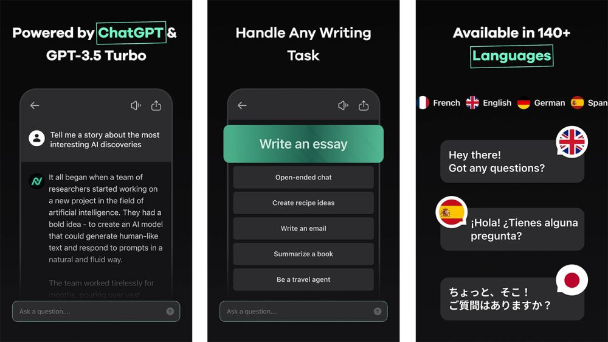

7 Aplikasi AI Terbaik untuk Dipasang di Android
ditulis oleh AriskaPutri. pada 23 oktober 2023
Sumber Artikel IDN TIMES
Artificial Intelligence atau AI saat ini sedang menjadi topik yang banyak dibicarakan oleh mereka yang mengikuti perkembangan teknologi. AI berkembang pesat dari tahun ke tahun dari yang awalnya hanya berkaitan dengan pencarian via gambar, menjadi sesuatu yang semakin cerdas dan dipergunakan di banyak hal, salah satunya ChatGPT.
Selain di beberapa situs dan platform lainnya, AI juga digunakan di beberapa aplikasi Android. Berikut beberapa di antaranya yang terbaik.
1. AI Mirror

AI Mirror merupakan salah satu contoh aplikasi terbaik dengan kemampuan manipulasi foto menggunakan AI. Aplikasi ini memanfaatkan AI untuk mengaplikasikan filter terhadap sebuah foto. Kamu bisa menambahkan foto, memilih gaya foto atau filter yang kamu inginkan dan AI Mirror akan langsung menggambar ulang foto tersebut menggunakan filter yang kamu pilih. Versi gratis dari aplikasi ini memang mengandung iklan, namun itu bisa diatasi dengan berlangganan.
2. Ask AI

Ketika aplikasi chat atau percakapan berbasis AI pertama kali keluar, semuanya terbilang kurang matang dan tidak begitu pintar. Namun makin kesini, aplikasi chat berbasis AI jadi terus lebih baik dan salah satunya ada pada Ask AI. Sesuai namanya, melalui aplikasi ini kamu bisa memberi pertanyaan dan mendapat jawaban dari bot AI berbasis Chat GPT. Aplikasi ini bisa digunakan secara gratis, mendukung banyak bahasa dan menyediakan opsi berlangganan mingguan hingga sekali bayar.
3. Imagine
Imagine merupakan salah satu aplikasi AI yang bisa membuat karya seni hanya menggunakan kata-kata atau kalimat. Kamu hanya perlu menuliskan apa yang ingin kamu gambar dan aplikasi ini akan menggambarkannya untuk kamu. Versi gratis dari aplikasi ini juga dapat dimengerti di mana tiap satu iklan yang ditonton, kamu mendapat satu kesempatan untuk mengubah kalimat menjadi karya seni. Jika mau, ada pula opsi berlangganan mingguan, tahunan hingga sekali bayar.
4. Microsoft Edge

Microsoft Edge merupakan salah satu browser underrated yang dapat diandalkan sebagai browser utama di HP. Microsoft selaku developer membuat gebrakan di 2023 ini dengan memperkenalkan fitur pencarian berbasis Chat GPT ke dalam Bing. Selain di versi PC-nya, fitur tersebut ternyata juga diintegrasikan ke dalam Edge versi mobile. Fitur tersebut bekerja seperti sebagian besar chatbot di mana kamu memberi pertanyaan selayaknya percakapan, dan fitur tersebut akan memberi jawaban atas pertanyaanmu.
5. Nova
Di samping Ask AI, Nova juga menjadi salah satu contoh bagaimana jika Chat GPT dibuat ke dalam format aplikasi. Aplikasi ini menggunakan Chat GPT-3.5 untuk menjawab pertanyaan-pertanyaan pengguna. Meski agak sulit diandalkan untuk menanyakan sesuatu yang kompleks, Nova bekerja dengan sangat baik untuk mencari jawaban dari pertanyaan sederhana. Versi gratis dari aplikasi ini cukup terbatas dan tidak seperti Ask AI, opsi berlangganan pada Nova tidak menyediakan opsi sekali bayar.
6. Socratic
Socratic merupakan salah satu aplikasi edukasi terbaik dari Google. Lewat aplikasi ini, kamu bisa mengambil gambar dari tugas sekolahmu dan Socratic akan membantu kamu mencari jawaban dari tugas itu. Tujuan dari dibuatnya aplikasi ini adalah untuk membantu kamu memecahkan permasalahan dari tugasmu, alih-alih mengerjakannya untuk kamu. Selain matematika, kamu juga bisa menggunakan aplikasi ini mengajarkanmu mata pelajaran lain seperti sains, sejarah dan literatur.
7. WOMBO Dream

WOMBO Dream merupakan satu dari beberapa aplikasi AI art generator pertama di platform mobile terutama Android. Kamu bisa menambahkan gambar yang kamu punya atau menuliskan kalimat yang nantinya akan diubah menjadi karya seni. Aplikasi ini memang tidak begitu sempurna dan versi gratisnya memiliki cukup banyak iklan yang bisa sangat mengganggu. Kendati demikian, aplikasi ini tetap menyediakan opsi langganan mulai dari per minggu, per tahun hingga sekali bayar untuk selamanya.
Itulah tadi ulasan sekaligus rekomendasi beberapa aplikasi AI terbaik untuk dipasang di Android. Tertarik untuk menggunakan aplikasi-aplikasi di atas?